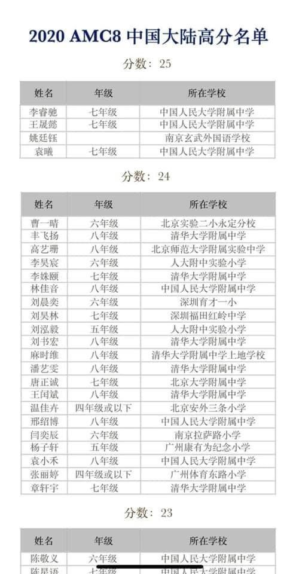

明年2月AMC10/12已經開始報名
獵豹會替報考AMC10的同學開設一期短課程
融合幾種頂尖「輕競賽」的重點素材
分八堂課給同學訓練
第二次的直播
我提出了「輕競賽 深入學習」的觀念
很多家長私line星媽詢問相關內容
所謂「輕競賽」指的是中低階賽事或檢定
包括AIME、AMC、TRML、APX、 TMT、JHMC...等
這些賽事需要的知識層面多以課內範圍為主
不強調刁鑽冷僻的知識和技巧
但需要靈活地運用知識
具備良好的分析能力 純熟的技巧
題目常別有創意兼具趣味性
組織團隊參與比賽可形成共學團體
同儕之間的切磋討論 良性競爭
對激發興趣 提升程度 極有幫助
參與這些競賽的訓練過程
對學生的在校成績、升學考試有非常好的幫助
尤其是對於在108教綱中加入的學習履歷
及難度遠高於學測指考的頂尖大學科系二階段筆試
對於有志於參與數學競賽的同學
我提出了從初學者到成為頂尖高手的訓練養成五階段論：
第一階段.能力的建立；思維模式的訓練
第二階段.知識的建立；技巧的提升
第三階段.知識的轉化、透視；想像力的運用
第四階段.高級的知識與技巧
第五階段.建模能力
要幫助孩子完成這五個階段
除了他們本身的努力 自我要求外
更需要借助專業的高品質訓練與指導
因為週二直播的時間有限 但要說明的東西實在太多
即使我盡量加快了速度 壓縮了內容
也只說明了前三個階段
周日晚我預計會加一場直播專門示範AMC10與輕競賽的教學
主要對象是9、10年級及7、8年級的超修資優生
時間與鏈結確定後會請管理員公布
2020的AMC8在排列組合方面 明顯地超過了八年級的知識
（屬於高一的標準題型）對於超修的同學是非常有利的！
台灣此次參與2020AMC8的人數應有萬人
考生普遍反映考題的難度提升
如果參照這幾年的數據
我估計全台滿分（25分）人數很可能在5人以下
我們調查了獵豹指導的學生 獵豹實體課許同學應是滿分者其中之一
上海奧數教練朋友
寄來北京一個超大補教機構的成績統計表（下圖）
四個滿分中
有三位是北京海淀黃莊號稱天下第一中的「人大附中」初中部學生
台灣朋友看了可能很驚訝
居然有兩個「四年級或以下」的孩子拿了24分
這也太優秀了吧！
其實 這是「正常」現象
多年來我指導的資優班 冒出頭來最優秀的通常都是超修生
大家納悶的是 那同屆的資優生跑哪去了？
呵 他們在更高的年級超修！
回憶當年 我建科的學生華祥志八年級時 不參加Amc8
直接參加Amc10拿了滿分
高一暑假他獲IMO金牌 高二去台大修王金龍教授的微積分
輾壓了所有數學系、電機系學長
全班因為華原始分數94 所以只能加6分 死傷一片...
真可謂 英雄出少年！
